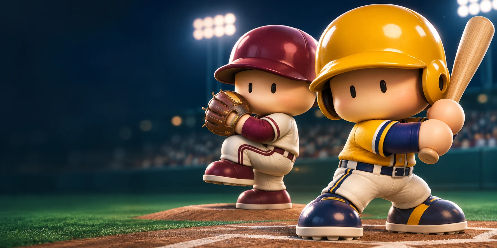

NIGHTBALL
😊
交代

メインメニュー
▶
つづきから
↗
CPBL / NPB / KBO
ペナント
↗
5イニング
対戦
↗
2026 代表大会
APBC
↗
高校からプロへ
選手キャリア
↗
HR競争
打撃練習
投球練習
♜
トーナメント
⇄
オンライン対戦
⚖
審判
選手
記録
0
m
遊び方
1回ウラ
ホームラン！
ABS
2
⬆
0
m
BATTING
ベンチ
申告敬遠
打球後 ×1
守備を自動で進行
走塁：自動
READY
—
km/h
この打席の配球
ミート
強振
バント
盗塁
球種を選択
コースを狙って離す
押す
↗
狙う
↗
離して打つ
タップして次の回へ
次の塁へ
帰塁
チャレンジ
ABSチャレンジ
審判スコア
0
投球正解率
—
塁上
—
判定は？
ボール
ストライク
接戦プレー、判定は？
セーフ
アウト
NIGHTBALL
ABS 挑戰系統
ABS
CHALLENGE
REPLAY
中信兄弟
カーソルをコースへ
CURSOR CONTROL
↔
カーソル移動
スライドで微調整
SWING
右タップで打つ
選手
作戦
履歴
練習設定